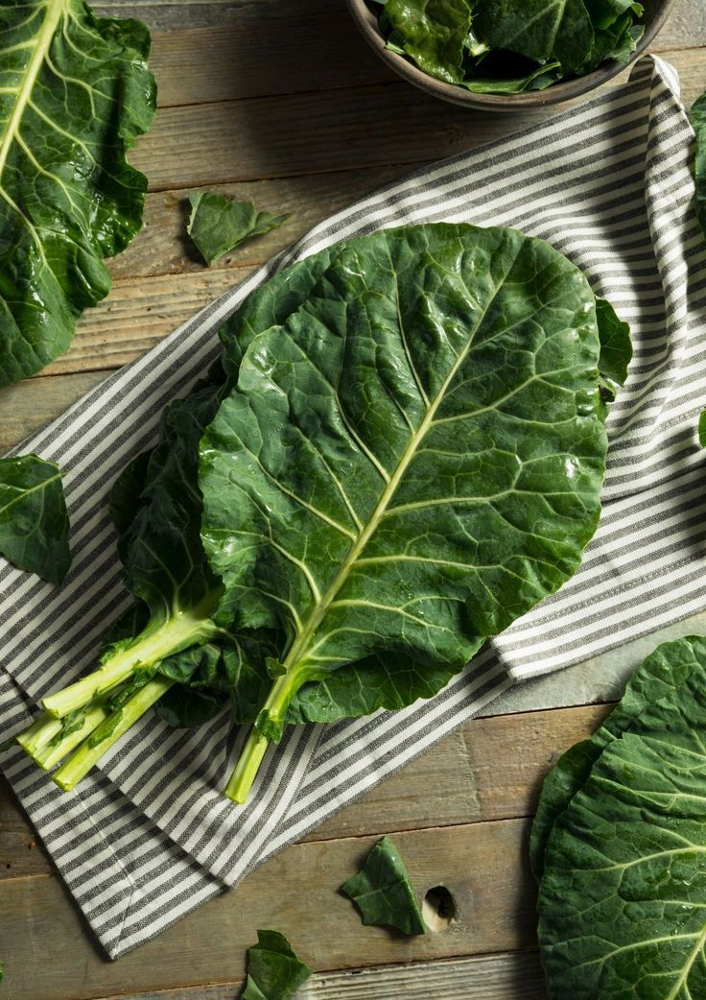

🥬 Couve
🌱 Como cultivar
A couve gosta de clima ameno a quente, mas resiste bem ao frio. O solo deve ser rico em matéria orgânica, bem drenado e sempre úmido. Plante em local ensolarado e faça podas regulares para estimular novas folhas. A colheita começa geralmente 60 a 90 dias após o plantio, retirando as folhas externas e deixando o centro da planta crescer.
🍽️ Receitas
💡 Curiosidade
A couve já era cultivada há mais de 4 mil anos no Mediterrâneo e era considerada um alimento sagrado pelos gregos e romanos, que acreditavam que ela podia até curar ressaca